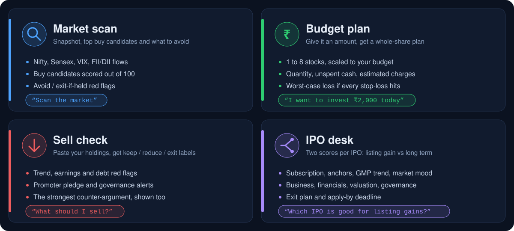
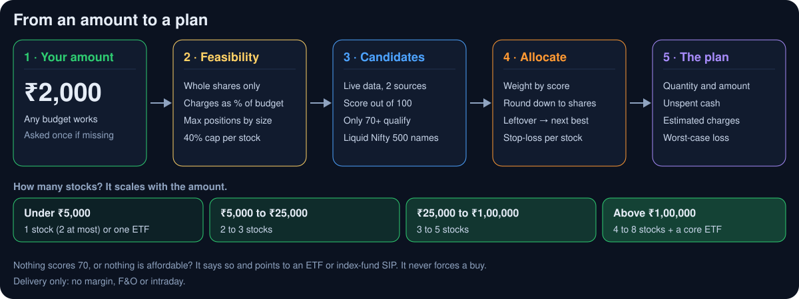
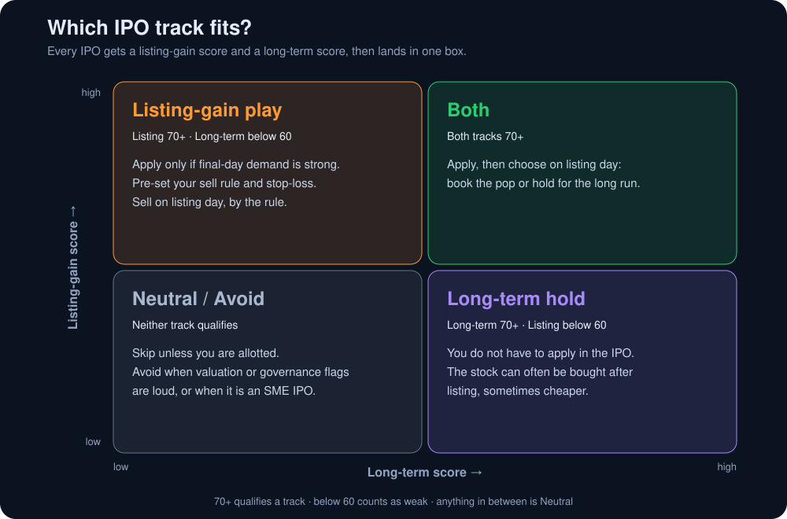
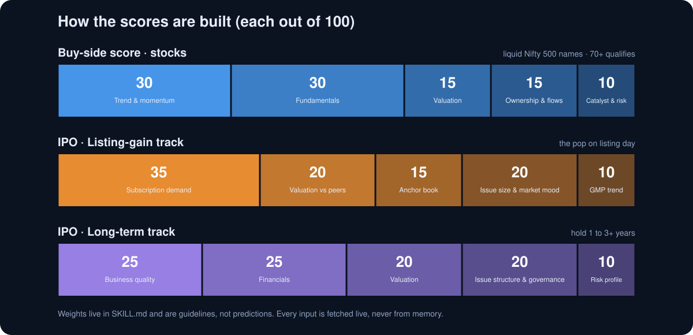

What the Indian stock market scanner does

- Market scan: Nifty, Sensex, Bank Nifty, India VIX, FII/DII flows and sector moves, plus buy candidates scored out of 100 with entry zone, stop-loss and target.
- Budget plan: tell it your amount and get a whole-share plan with unspent cash, estimated charges and the worst-case loss.
- Sell check: paste your holdings and get keep, reduce or exit labels with a one-line reason.
- IPO desk: two scores per IPO, listing gain and long term, with a verdict, an exit plan and the apply-by deadline.
Budget plan: invest ₹2,000 or any amount

It checks what is feasible at your size (whole shares only, charges as a share of the budget, position limits), picks live candidates scoring 70 or more, rounds down to whole shares, and shows unspent cash, estimated charges and the worst-case loss. Under ₹5,000 it uses one or two stocks or an ETF; above ₹1,00,000 it uses four to eight stocks plus a core ETF. It never forces a buy and never uses margin, F&O or intraday.
IPO desk: listing gain vs long term

Every mainboard IPO is scored twice: a listing-gain score (subscription demand, valuation vs peers, anchors, issue size and market mood, GMP trend) and a long-term score (business quality, financials, valuation, governance). The verdict is Listing-gain play, Long-term hold, Both, Neutral or Avoid, with a listing outlook and an exit plan. The skill says plainly when your amount cannot fund one lot.
How the scores are built

Stocks are scored out of 100 on trend and momentum (30), fundamentals (30), valuation (15), ownership and flows (15) and catalyst and risk (10). Only 70 or more qualifies. Every input is fetched live and cross-checked, never recalled from memory.
FAQ
What is the India Market Scanner?
A free, open-source Claude skill: a Markdown instruction file that teaches Claude to act as an Indian stock market scanner for NSE and BSE, covering market scans, budget plans, sell checks and IPO verdicts.
Is there a Claude skill for the Indian stock market?
Yes, this one. Install it in Claude Code or the Claude app, then ask things like "scan the market" or "I want to invest ₹2,000 today".
How do I scan NSE and BSE stocks with Claude?
Install the skill, enable web access, and ask "scan the market". It fetches Nifty, Sensex, India VIX and FII/DII flows live, scores liquid Nifty 500 stocks out of 100, and returns buy candidates and an avoid list with sources.
Can it suggest stocks for a small budget like ₹2,000?
Yes. It builds an illustrative whole-share plan across 1 to 8 stocks depending on the amount, shows unspent cash, estimated charges and the worst-case loss, and says when an ETF or index-fund SIP fits better. It never forces a buy.
Which IPO is good for listing gains, and which is for the long term?
Each mainboard IPO gets two scores: listing gain (subscription, anchors, valuation vs peers, GMP trend, market mood) and long term (business, financials, valuation, governance). The verdict is Listing-gain play, Long-term hold, Both, Neutral or Avoid.
Is it free, and is it investment advice?
It is free and MIT licensed. It is not investment advice, and it is not a SEBI-registered adviser or research analyst. Outputs are screen-based candidates for you to verify.
Where does the data come from?
Live web sources fetched in each session, such as exchange pages, filings, Screener.in, Moneycontrol and Chittorgarh. Figures are cross-checked and shown with an as-of time, and anything it cannot verify is marked "not verified".
Install the skill
For Claude Code:
git clone https://github.com/haarsh24/india-market-scanner.git
cp -r india-market-scanner/skills/india-market-scanner ~/.claude/skills/For the Claude app, zip the skills/india-market-scanner folder and upload it from the Skills section of settings. Enable web access so the skill can fetch live data. Full instructions are in the README.